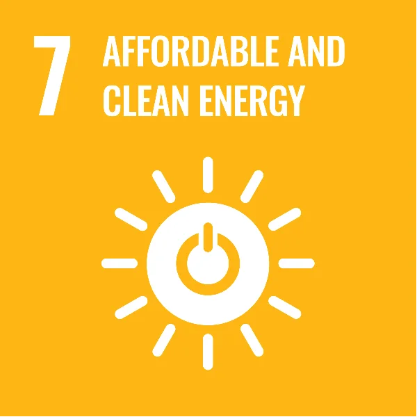
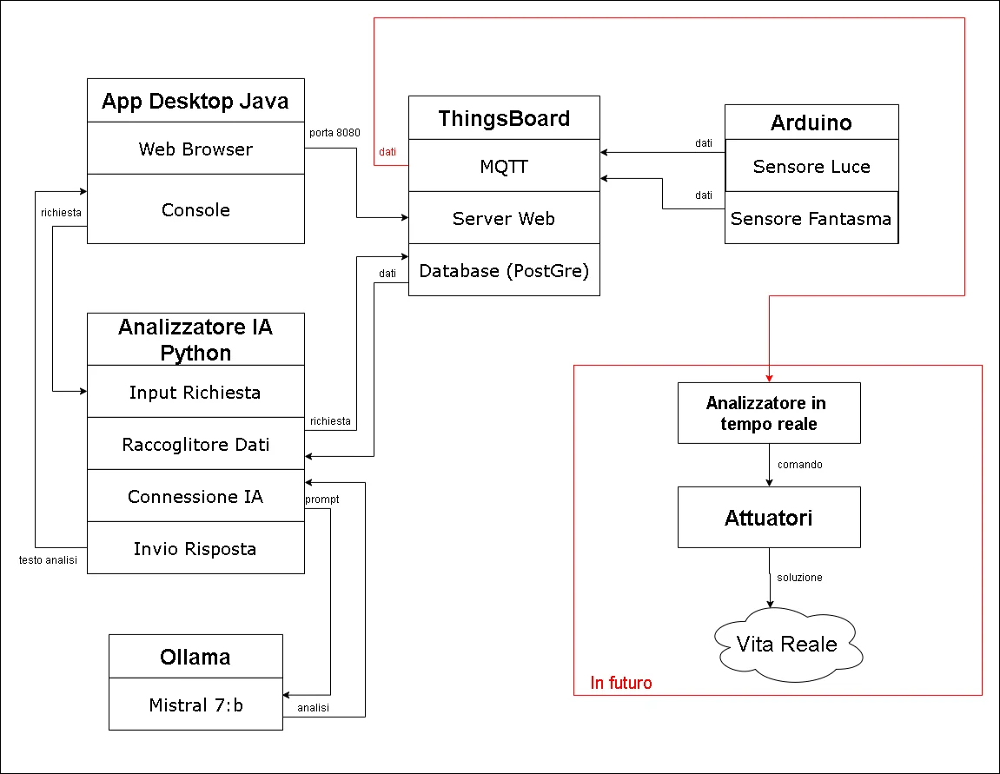
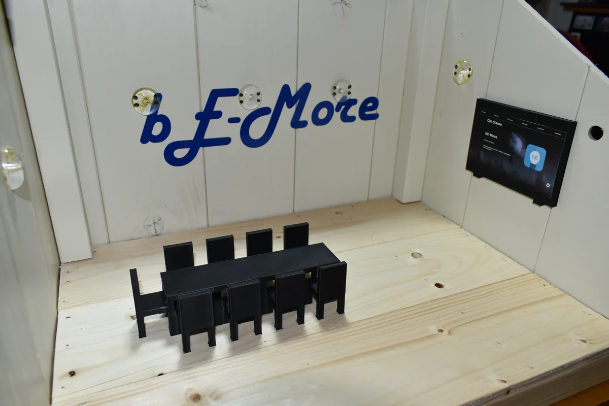
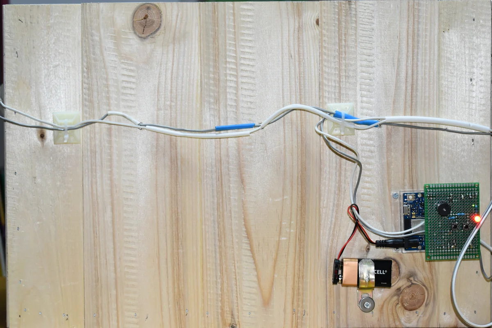
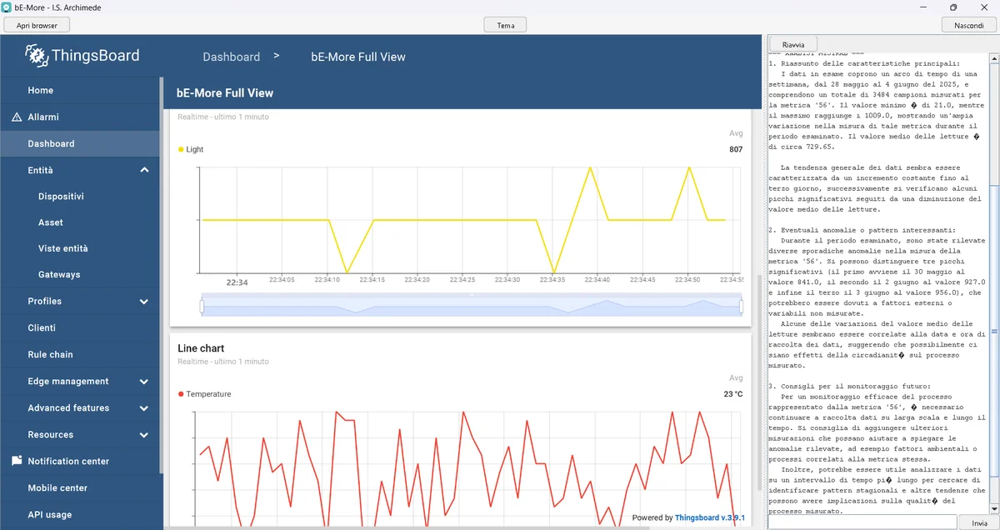
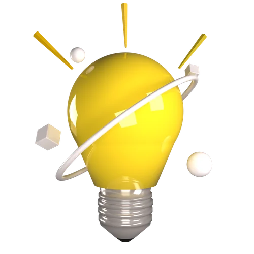

bE-More: Corporate Energy Optimization
An end-to-end IoT and Edge AI system designed to monitor, analyze, and optimize corporate energy consumption in real time, aligned with Agenda 2030 goals.
Abstract
Energy waste in commercial and industrial offices is a silent overhead with significant environmental and economic costs. Developed during our 4th-year high school Project Day following a specialized React course by Sorint.lab, bE-More is a comprehensive smart energy platform. It pairs edge microcontroller telemetry (Arduino) with ThingsBoard cloud/local streams and on-premise AI models to automatically identify power drains and trigger immediate optimization actions.
Objective & Educational Context
With strict sustainability directives under Agenda 2030, our team set out to engineer a scalable, low-cost solution suitable for small and medium enterprises. The project originated as our capstone for the annual Project Day at I.S. Archimede (class 4Ht-i). Having recently completed an intensive React training program delivered by Sorint.lab, we applied enterprise front-end patterns to visualize telemetry streams in real time.

IoT Architecture & Edge Intelligence
The system bridges physical edge sensor telemetry with real-time analytics and user control:
- Sensor Layer (Arduino): Current transformers, temperature/humidity sensors, and motion detectors capturing power metrics at device-level resolution.
- Telemetry Pipeline (ThingsBoard): Real-time bi-directional messaging transmitting sensor state updates and device control commands.
- Edge AI & Decision Engine: Local intelligence inspecting historical patterns to detect anomalous standby spikes, proposing automated power-down states.
- Responsive Control Dashboard: Web and mobile-accessible interface displaying instantaneous kilowatt-hour metrics, predictive graphs, and alert thresholds.

Physical Prototype: The Smart Office Model
To prove real-world viability, we engineered a fully functional, scale physical prototype of a modern office featuring custom microcontroller electronics, sustainable salvaged hardware, and 3D-printed interiors:

Smart Office Prototype (Front)
Front view of the smart office scale model: 3D-printed miniature furniture, ceiling-mounted LDR light sensor, and television backlight LED strips providing room illumination.

Wiring & Sensor Interfacing (Rear)
Rear electronics view: Arduino UNO R4 WiFi equipped with a custom expansion shield, acoustic buzzer, red status indicator LED, and physical toggle buttons.
Prototype Engineering & Hardware Breakdown
Arduino UNO R4 WiFi & Custom Shield
The prototype's brain is an Arduino UNO R4 with onboard Wi-Fi and Bluetooth. A custom-built shield handles the wiring cleanly, interfacing the microcontroller with sensors and power lines.
Recycled TV Backlight LEDs
Embracing sustainability and circular hardware, lighting was crafted by salvaging actual LED strips from television backlights, wired directly to the custom shield for bright, energy-efficient illumination.
Ceiling LDR & Auto-Dimming
A light sensor (LDR) mounted at the top of the room measures ambient daylight. In automatic mode, if natural light surpasses a set threshold, the lights instantly power down to eliminate unnecessary power draw.
Dual Buttons & Sensory Feedback
Two physical buttons allow manual control: one toggles lights ON/OFF, the other toggles Auto Mode. A bright red status LED illuminates when Auto Mode is active, and an acoustic buzzer beeps on every mode toggle.
3D-Printed Miniature Furniture
All desks, chairs, and office workstations were custom modeled and 3D printed to accurately recreate an authentic modern corporate office to evaluate lumen dispersion and aesthetic appeal.

bE-More Application Mockup & Telemetry View
Tech Contest Victory & Practical Results
bE-More was presented at our school's competitive Project Day, evaluated by industry professionals and engineers. Thanks to the combination of tangible hardware, functional local AI recommendations, and clean telemetry visualization, our project was awarded First Place in the technical competition.
Beyond the award, the project validated that corporate sustainability does not require expensive industrial overhaul — smart edge IoT can deliver immediate energy reductions on existing infrastructure.
Read the Full Story on Hashnode
The Project Team
Built collaboratively by the students of class 4Ht-i at I.S. Archimede: